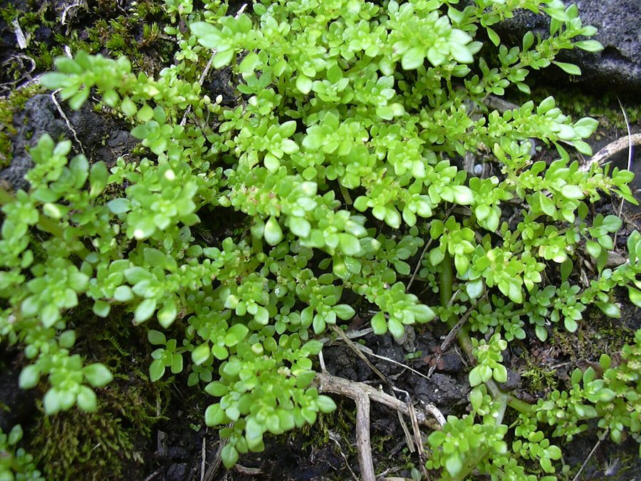

आर्टिलरी प्लांटArtillery Plant
Pilea microphylla · Urticaceae · FLR-0408

- Scientific name वैज्ञानिक नाम
- Pilea microphylla (L.) Liebm.
- Family कुल
- Urticaceae
- Hindi हिंदी
- आर्टिलरी प्लांट
- Local names स्थानीय नाम
- artillery plant
- Status here यहाँ की स्थिति
- naturalized
- Movement आवागमन
- Resident, here all year
- Known from कहाँ दर्ज
- Others have published records from the wider Awadh–Purvanchal plain, none yet from Basti–Ayodhya अवध–पूर्वांचल से दूसरों के प्रकाशित अभिलेख, बस्ती–अयोध्या से अभी नहीं
- IUCN IUCN
- not evaluated
- Review समीक्षा
- not yet reviewed
When to look कब देखें
Expected mainly in January, February, July, August, September, October, November, December. मुख्यतः जनवरी, फ़रवरी, जुलाई, अगस्त, सितंबर, अक्टूबर, नवंबर, दिसंबर में अपेक्षित।
आर्टिलरी प्लांट / Artillery Plant
Pilea microphylla (L.) Liebm. — Urticaceae
आर्टिलरी प्लांट — यह पुरानी ईंट की दीवारों, कुओं की भीट और नम छायादार पत्थरों पर उगने वाला एक बहुत छोटा और रसीला पौधा है। यह फर्न जैसा दिखता है और इसकी पत्तियाँ नन्ही-नन्ही होती हैं। इसके नर फूलों के पुंकेसर परिपक्व होने पर झटके से खुलते हैं और बारूद के धुएं की तरह परागकणों को हवा में उड़ाते हैं, जिससे इसे तोप या आर्टिलरी प्लांट कहा जाता है।
Quick Identification त्वरित पहचान
| Feature | Description |
|---|---|
| Plant habit | Tiny, succulent, much-branched, fern-like procumbent or erect micro-herb |
| Stems | Pellucid, watery, succulent, pale green, diffusely branched |
| Leaves | Opposite, distichous, crowded, unequal-sized pairs; elliptic to obovate |
| Inflorescence | Extremely small, subsessile cymes clustered in the leaf axils |
| Flowers | Minute, unisexual, greenish-white or pinkish-tinged |
| Mechanism | Explosive dehiscence of male stamens ejecting pollen clouds into the air |
Field tip: Look on old damp brickwork or well linings for tiny succulent fern-like green mats with miniature rounded leaves.
हिंदी: पुरानी ईंट की दीवारों और कुओं पर उगी फर्न जैसी नन्ही रसीली पत्तियों से इसे आसानी से पहचाना जा सकता है।
Morphology आकारिकी
Measurement not available in consulted sources.
A tiny, delicate, succulent annual or short-lived perennial herb forming dense moss-like or fern-like cushions on moist substrate. Stems slender, succulent, translucent (pellucid), watery, green or pinkish-tinged, prostrate, ascending or erect, profusely branched from the base.
Leaves opposite, distichous, crowded along the branchlets, noticeably dimorphic at each node with one leaf distinctly larger than the other; blade elliptic, obovate or suborbicular, obtuse at the apex, cuneate at the base, entire, succulent, bright green, glabrous, marked on the upper surface with transverse linear cystoliths; petiole very short or almost absent.
Inflorescence consisting of very small, dense, subsessile axillary cymes. Flowers minute, unisexual (monoecious), greenish or slightly reddish. Male flowers with a four-parted perianth and four stamens; filaments elastic, incurved in the bud, springing outwards violently at anthesis to eject the pollen. Female flowers with a three-parted unequal perianth, one segment larger and hooded, enclosing the ovary.
Fruit a minute, ovoid, compressed achene, smooth, pale brownish, partially enclosed by the persistent perianth segments.
हिंदी: पौधा बहुत छोटा और रसीला होता है। तना पारदर्शी सा दिखता है। पत्तियाँ बहुत छोटी और गोल होती हैं। फूल इतने छोटे होते हैं कि बिना लेंस के देखना मुश्किल होता है।
Behaviour & Ecology व्यवहार और पारिस्थितिकी
Native to the Neotropics (Central and South America and the Caribbean), now widely naturalized across the humid tropics and subtropics of the Old World. It is an obligate or facultative rupestral and mural weed, exceptionally well adapted to colonizing porous brickwork, lime mortar, old temple ruins, shaded well walls, and damp pots in horticultural nurseries.
The defining characteristic of the species is its explosive pollen dispersal mechanism: as the male flower reaches maturity in dry air, tension builds up in the elastic filaments until they suddenly snap outwards, discharging a miniature cloud of dry pollen into the surrounding air. This adaptation allows an inconspicuous, ground-hugging plant to achieve wind-pollination.
हिंदी: यह पौधा पुरानी इमारतों की दरारों और नम दीवारों पर उगना पसंद करता है। इसके नर फूल खिलते समय बारूद के धुएं की तरह परागकण हवा में फेंकते हैं।
Life Cycle / Phenology जीवन चक्र
Plants flourish during the high humidity of the monsoon from July through September, producing lush green cushions on damp brickwork. Vegetative growth continues in sheltered spots throughout autumn and winter.
Flowering occurs almost continuously in warm, humid weather, with peak pollen release happening during sunny mornings from August through December. Minute achenes are washed into mortar crevices by rain or carried by visiting ants. During the dry heat of April to June, above-ground parts shrivel on exposed walls, but seeds or sheltered stems revive rapidly with the first monsoon showers.
हिंदी: बारिश के मौसम में यह दीवारों पर तेजी से फैलता है। अगस्त से दिसंबर तक इसमें फूल आते हैं। गर्मी में सूखने के बाद बारिश आते ही यह दोबारा जी उठता है।
Associated Species / Interactions सहजीवी प्रजातियाँ
Forms unique micro-ecosystems on old walls alongside mural mosses, ferns, and small weeds such as common chickweed and creeping woodsorrel.
Tiny ants visit the cushions to forage on fallen debris and disperse the minute achenes. Small jumping spiders (Salticidae) frequently stalk tiny flies and springtails among the dense leafy stems.
हिंदी: यह पुरानी दीवारों पर काई और नन्हे पौधों के साथ उगता है। छोटी मकड़ियाँ और चींटियाँ इसके पत्तों के बीच शिकार तलाशती हैं।
Pests and Diseases कीट और रोग
Remarkably free from insect pests on masonry walls. In excessively stagnant, humid greenhouse corners, fungal rot may occasionally develop at the stem base.
हिंदी: इस पौधे पर कीड़े नहीं लगते, पर जरूरत से ज्यादा नमी में तना कभी-कभी सड़ सकता है।
Agricultural / Human Relevance कृषि प्रासंगिकता
In eastern Uttar Pradesh, the artillery plant is not a weed of open agricultural fields; rather, it is a ruderal and mural plant of urban and rural masonry, old wells, and garden nurseries.
हिंदी: यह खेतों का नुकसान नहीं करता बल्कि पुरानी दीवारों और कुओं पर उगता है। इसका कोई बड़ा कृषि नुकसान नहीं है।
Expected Locally स्थानीय रूप से अपेक्षित
Not a field record. Written from published accounts for eastern Uttar Pradesh. No confirmed local sighting yet — if you have seen it, that is what the atlas needs.
अभी तक स्थानीय पुष्टि नहीं। यह विवरण प्रकाशित स्रोतों से है, किसी अवलोकन से नहीं।
Expected on the damp shaded bricks of old village wells, canal bridges, temple ruins, and botanical nurseries across Basti, Ayodhya, and neighbouring districts from July through February. GBIF holds published records from the wider Awadh–Purvanchal plain, none yet from Basti–Ayodhya. The first verifiable record from the region will be a dated photograph of flowering plants or a population in a weed habitat or field border with district and coordinates.
हिंदी: बस्ती और अयोध्या के पुराने पक्के कुओं, पुरानी दीवारों और छायादार ईंटों पर बरसात और ठंड में इसे देखा जा सकता है।
Distribution वितरण
Global range: Native to tropical America from Florida and the Caribbean to Brazil; widely naturalized across the Old World tropics and grown globally as an ornamental.
In India: Naturalized in moist tropical and subtropical regions, particularly in Bengal, the Western Ghats, and the Gangetic plain.
In Uttar Pradesh: Found in older urban settlements, botanical gardens, nursery grounds, and ancient brick structures.
In Basti district / eastern UP: Expected on heritage masonry, old well copings, and shaded brick walls throughout rural and urban settlements.
हिंदी: मूल रूप से अमेरिका का यह पौधा आज भारत के लगभग सभी पुराने शहरों, बगीचों और ऐतिहासिक इमारतों की दीवारों पर बस चुका है।
Research Questions शोध प्रश्न
- What physical triggers (temperature, humidity drop) induce the synchronized explosive firing of pollen clouds in local populations?
- How does the root penetration of this succulent micro-herb affect the long-term integrity of traditional lime-mortar brickwork?
- What micro-invertebrates inhabit the dense cushions of this plant on shaded well linings in eastern UP? / पुराने कुओं की दीवारों पर इसके गुच्छों में कौन से सूक्ष्म जीव शरण लेते हैं?
- How long can the minute achenes survive desiccation on bare sun-baked brick during the scorching months of May and June? / मई और जून की भीषण गर्मी में इसके नन्हे बीज सूखी ईंटों पर कितने समय तक जीवित रह सकते हैं?
- Can a child lightly touch a cluster of mature male flowers on a warm morning and watch the tiny puff of pollen smoke?
हिंदी: क्या धूप निकलने पर इसके फूलों से सचमुच धुएं जैसा पराग उड़ता है और क्या यह पुरानी दीवारों को नुकसान पहुँचाता है?
Similar Species मिलती-जुलती प्रजातियाँ
| Species | How to tell apart | हिंदी |
|---|---|---|
| None | Distinctive miniature fern-like succulent habit on damp brickwork; no close mural look-alike in the local flora | नम दीवारों पर विशिष्ट रसीली पत्तियों के कारण इसका कोई करीबी मिलता-जुलता पौधा नहीं है |
Field rule: Look for the miniature fern-like succulent habit on damp brickwork, translucent stems, tiny unequal leaf pairs, and explosive pollen release.
हिंदी: दीवारों पर उगी नन्ही रसीली फर्न जैसी पत्तियाँ, पारदर्शी तने और पराग उड़ाने वाले नन्हे फूल इसकी पहचान हैं।
Taxonomy & Classification वर्गीकरण
Original description. First described as Parietaria microphylla by Carl Linnaeus in 1759 in Systema Naturae, edition 10, volume 2, page 1308. Transferred to Pilea by Frederik Michael Liebmann in 1851 in Kongelige Danske Videnskabernes Selskabs Skrifter, series 5, volume 2, page 296.
Subspecies. Often treated in older works under the synonym Pilea muscosa Lindl. (Hooker 1888). Monotypic in our region.
Family and order placement. Placed in family Urticaceae (nettle family), order Rosales. Unlike many nettles, it lacks stinging hairs.
Phylogenetic notes. Placed in the large genus Pilea, which comprises several hundred tropical species adapted to damp and shaded substrates.
IUCN status rationale. Not evaluated by the IUCN Red List. It is an exceedingly adaptable, abundant, and widespread naturalized species.
हिंदी: यह अर्टिकेसी (बिच्छू बूटी कुल) का सदस्य है, पर इसमें कांटे नहीं होते। लीबमैन ने 1851 में इसे पाइलिया जीनस में रखा था।
Photo Gallery फोटो गैलरी
No photos yet — add field photos to media/species/artillery_plant/ and run node scripts/sync_photos.js.
Photos needed आवश्यक फोटो
- [ ] Habit on damp brick masonry showing fern-like branching (पुरानी दीवार पर फर्न जैसा पौधा)
- [ ] Close-up of translucent succulent stem and tiny leaves (पारदर्शी तना और नन्ही पत्तियाँ)
- [ ] Male flower cluster discharging pollen cloud (पराग उड़ाते हुए फूलों का गुच्छा)
References संदर्भ
- Liebmann, F. M. (1851). Kongelige Danske Videnskabernes Selskabs Skrifter, ser. 5, vol. 2, p. 296.
- Linnaeus, C. (1759). Systema Naturae, ed. 10, vol. 2, p. 1308.
- Hooker, J. D. (1888). The Flora of British India, vol. 5, p. 577. (as Pilea muscosa)
- Chopra, R. N., Nayar, S. L. & Chopra, I. C. (1956). Glossary of Indian Medicinal Plants, Council of Scientific and Industrial Research, New Delhi, p. 193.
- GBIF Occurrence Data — Pilea microphylla, India (2025).
Source file: species/flora/weeds/artillery_plant.md